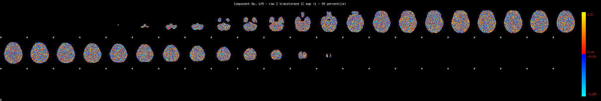
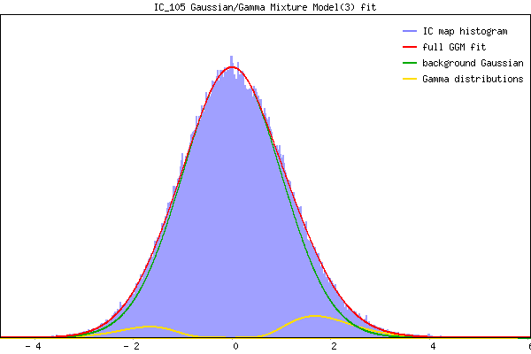

IC_105 Mixture Model fit
Means : 0.000000 1.930088 -1.857145
Vars : 1.000000 0.481081 0.357171
Prop. : 0.929766 0.048690 0.021544
This page produced automatically by MELODIC Version 3.15 - a part of FSL - FMRIB Software Library.